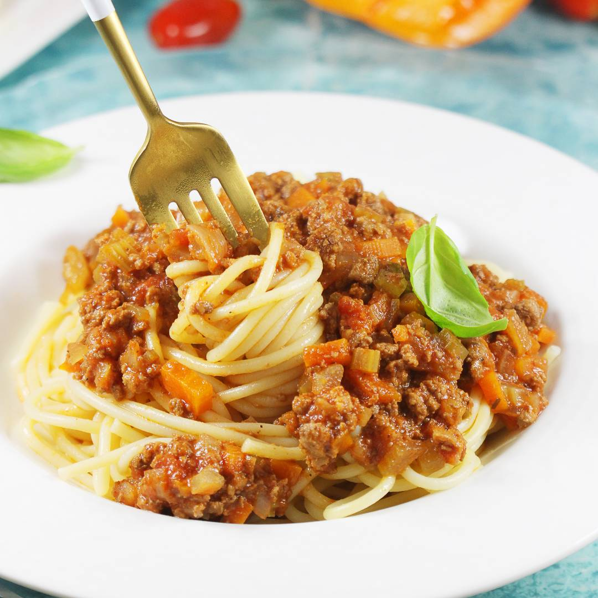

Spaghetti Bolognese

Description
To make delicious spaghetti, the most important thing is good beef with a bit of pork, fresh vegetables, high-quality pasta and additives. Check out my best and proven recipe for this dish.
Ingredients
- 500 g of beef with a bit of pork
- 200 grams of Guanciale, Pancetta or raw bacon - can be omitted
- 1 liter of broth, e.g. vegetable or beef
- 3/4 cup of dry wine - red or white
- can of tomatoes in pieces - 400 g
- 3 tablespoons of tomato paste
- 2 cloves of garlic - 10 g
- 1 large onion - up to 300 g
- 3 stalks of celery - 180 g
- 1-2 carrots - 200 g
- 1/3 cup of milk
- 4 tablespoons of oil for frying
- spices: a teaspoon each of salt and oregano; a flat teaspoon of pepper
Steps
- Prepare a medium frying pan with a thick bottom. Start warming it up. Add two tablespoons of oil for frying. Place the peeled and finely chopped onion in the pan. Fry the onion on medium heat for about 8 minutes until it turns brown. After this time, add two cloves of garlic. Peel them in advance and cut them into slices. Fry the onion and garlic for another two minutes.
- Add the vegetables to the pan with onion and garlic. Fry everything on medium heat for five minutes. After this time, put all the vegetables in a pot with a capacity of no less than 2.5 liters, in which you will prepare the spaghetti sauce.
- Place the ground meat in the pan after the vegetables. Add two tablespoons of oil for frying and fry the meat for 10 minutes.
- After 10 minutes, put the fried meat into a pot with vegetables.
- Next, add a can of chopped or whole tomatoes (together with the sauce) and three solid tablespoons of tomato paste.
- Mix the contents of the pot thoroughly. Set the burner to medium power and bring to a boil.
- Place portions of pasta on plates. Pour hot Bolognese sauce over the pasta. I recommend sprinkling each portion with additional grated parmesan and decorating with fresh basil leaves.
Go back